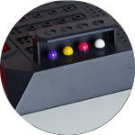
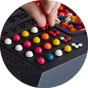

Mastermind es un juego de habilidad y lógica que consiste en descubrir una secuencia de colores
que oculta.

Tendrás un número limitado de intentos para tratar de descubir la secuencia ganadora. Con cada
intento se te dará unas pistas para que puedas descartar los colores.